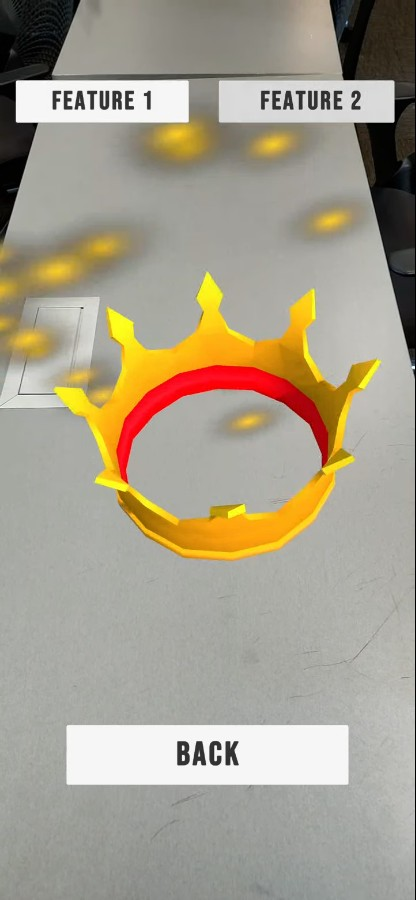

Team coursework · Network/server role
Owned the network/server workstream for a proposed 50-user gaming café. My work breakdown structure covers requirements, IP and VLAN design, equipment, server roles, security controls, testing, documentation, and handover. This was an academic planning project.
Network designWBSVLAN planningSecurity
Read case study →50
users
Individual coursework · Unity/C#
Built a Unity mobile AR app with a four-product gallery, plane detection, touch raycasting, object placement, and two product-specific interactions per item. The school folder includes a packaged Android build and C# scripts.
UnityC#AR FoundationInteraction design
Watch footage and read case study →
Watch footage →
Original browser build · Playable demo
A three-level arcade maze game built with HTML, CSS, and JavaScript. It includes keyboard and touch controls, timed hazards, pause/resume, sound, and a best score saved locally.
JavaScriptCanvasResponsive UI
Play the game →
Course prototype · Local API
Connected a browser image classifier to a local Node.js API that compares image descriptions from four models and reviews uploaded PDF résumés. The API-dependent features run locally.
TensorFlow.jsNode.jsPDF parsing
Read case study →
Five-person team · User research
Our team observed three shoppers across mobile and desktop tasks, identified clutter and navigation friction, and selected a cleaner interface direction. The small sample makes this an exploratory study.
HCITask-based testingResearch synthesis
Read case study →
Individual assignment · Systems analysis
Mapped a fictional company's departments and IT resources into an Active Directory structure, then compared license costs and identified a usage threshold for changing plans.
Active DirectoryOrganizational unitsCost analysis
Read case study →